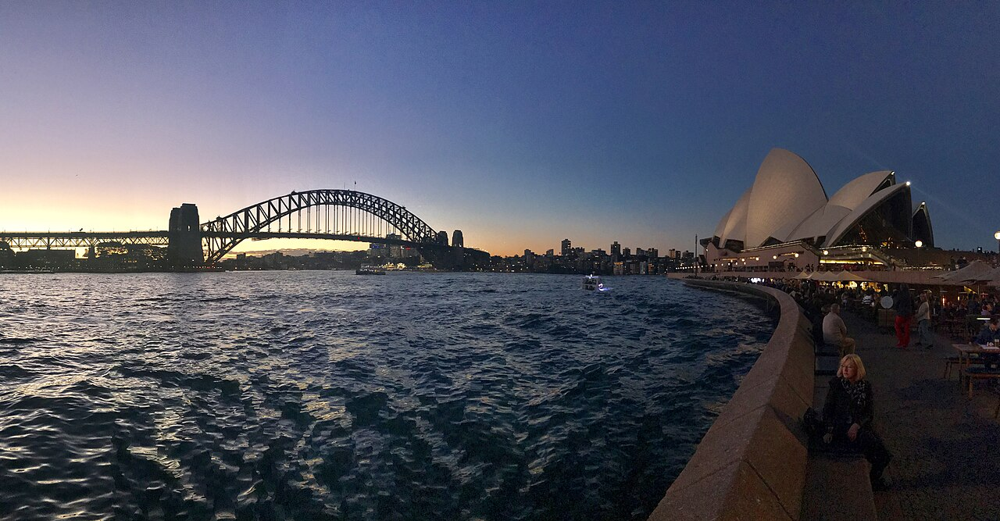

10/4 · 공항에서 골드코스트
브리즈번 공항 → Airtrain → Helensvale에서 G:link 트램 환승 → Cypress Avenue → 호텔 도보.
수하물이 많으면 4명과 짐을 실을 차량 견적도 비교하기. 당일 열차 운행·공사 여부 확인.
Airtrain 공식 안내 ↗FAMILY TRIP · 2026
9월 29일 — 10월 8일 · 우리 넷의 호주 여행

SYDNEY HARBOUROUR ITINERARY
STAY & MOVE
브리즈번 공항 → Airtrain → Helensvale에서 G:link 트램 환승 → Cypress Avenue → 호텔 도보.
수하물이 많으면 4명과 짐을 실을 차량 견적도 비교하기. 당일 열차 운행·공사 여부 확인.
Airtrain 공식 안내 ↗호텔에서 노보텔 브리즈번 에어포트까지 차량으로 바로 이동하는 방법을 추천해요.
아직 차량 미예약. 출발 전 4명·수하물 포함 견적과 소요시간 확인하기.
08:40 출발편. 국제선 터미널에 05:40 도착을 목표로 준비해요.
노보텔 셔틀 첫 시간 확인. 시간이 맞지 않으면 새벽 택시를 준비해요.
공항 출발 안내 ↗BEFORE WE GO
9/30~10/4 메리톤 서섹스에서 같은 객실로 4박 머물러요. 킹 1 + 싱글 2, 짐 보관, 생일 준비·이름 등록도 호텔 답변으로 확인했어요.
01 · 지금 할 일
02 · 확인할 일
03 · 나중에 할 일
관광·식당·차량은 추천 단계예요. 이 페이지가 예약이나 실시간 운행정보를 대신하지는 않아요. 완료된 준비는 대화에서 알려주면 다음 업데이트에 반영할 수 있어요.
호주 탐험 교실
비행기에서는 역사 이야기, 호텔에서는 내일 갈 곳을 읽어 보자. 짧은 설명부터 읽고, 궁금하면 ‘한 걸음 더’를 열어 봐!
01 · 나라 탐험
호주는 적도 아래 남반구에 있어. 우리가 가는 시드니와 골드코스트는 9~11월이 봄이야. 한국과 계절이 반대인 셈이지. 다만 호주는 아주 커서 북쪽의 열대 지역은 우기와 건기로 나누기도 해.
유명한 시드니가 수도라고 생각하기 쉽지만, 수도는 캔버라야. 이번에는 시드니가 있는 뉴사우스웨일스주와 골드코스트·브리즈번이 있는 퀸즐랜드주를 여행해.
지구의 자전축이 기울어진 채 태양 주위를 돌기 때문이야. 북반구가 햇빛을 더 오래 받는 시기에는 남반구가 덜 받아. 지구가 태양에 가까워서 여름이 되는 것은 아니야.
같이 생각하기: 12월에 호주의 크리스마스 카드를 그린다면 어떤 옷과 풍경을 넣을까?
더 읽기: 호주관광청 · 계절
02 · 시간 여행
호주에는 아주 오래전부터 살며 땅과 바다를 돌본 사람들이 있어. 애버리지널과 토레스해협 섬 주민을 호주의 첫 사람들, ‘퍼스트 네이션스(First Nations)’라고 불러. 서로 다른 언어와 문화를 가진 여러 공동체이며, 오늘날에도 함께 살아가는 이웃이야.
호주 본토에는 이때부터 사람이 살았다는 고고학적 증거가 있어. ‘고고학’은 도구나 땅속 흔적을 살펴 옛사람들의 삶을 알아보는 공부야.
아서 필립이 이끈 11척의 배가 시드니 코브에 정착지를 세웠어. 죄수와 군인 등도 배에 타고 왔지. 하지만 빈 땅에 온 것은 아니야. 식민지 건설로 원주민들은 땅을 빼앗기고 질병과 폭력으로 큰 피해를 입었어.
각각 다스려지던 여섯 영국 식민지가 모여 ‘오스트레일리아 연방’을 만들었어. 함께 정할 일은 연방정부가, 지역의 일은 주정부가 나누어 맡는 방식이야.
덴마크 건축가 예른 웃손이 설계한 오페라하우스가 10월 20일 공식 개관했어. 여러 사람의 협력으로 완성된, 시드니를 대표하는 공연장이야.
호주 정부는 과거 정책으로 원주민 아이들을 가족에게서 강제로 떼어 놓았던 일에 공식 사과했어. 이 아이들과 피해를 겪은 사람들을 ‘빼앗긴 세대’라고 불러. 사과 뒤에도 권리와 회복을 위한 노력은 이어지고 있어.
새로 도착한 사람에게는 정착의 시작이지만, 원래 살던 사람에게는 집과 생활을 잃는 시작일 수 있어. 역사를 배울 때는 누구의 목소리를 듣고 있는지도 살펴보자.
1901년은 연방이 만들어진 해야. 모든 사람의 권리가 그날 한꺼번에 평등해졌다는 뜻은 아니야.
03 · 우리가 갈 곳
오페라하우스가 있는 땅의 이름은 투보굴레(Tubowgule). 가디갈 사람들에게 오래전부터 모임과 이야기의 장소였어. 지금의 공연장도 사람들을 모으는 장소이지.
눈으로 찾기: 지붕은 무엇처럼 보일까? 돛, 조개, 오렌지 조각처럼 각자 떠오르는 모양을 말해 보자.
웃손은 지붕의 곡면을 하나의 구에서 잘라 낸 부분들로 만드는 해법을 찾았어. 둥근 공의 표면을 조각낸다고 상상해 봐. 멋진 모양을 실제로 만드는 데도 수학이 쓰이지!
QVB는 Queen Victoria Building의 줄임말이야. 쇼핑만 하지 말고 아치 모양 창과 장식도 찾아보자. 오래된 건물이 오늘날 다른 쓰임으로 살아가는 모습을 볼 수 있어.
비교하기: 우리 동네 쇼핑몰과 닮은 점 하나, 다른 점 하나를 찾아보자.
파도와 바람은 모래를 옮기고 해변의 모양을 바꿔. 같은 곳도 시간에 따라 달라 보여. 바다에 들어갈지는 어른과 구조대 안내를 보고 결정하자.
관찰하기: 눈으로 보이는 것 세 가지, 들리는 소리 두 가지, 느껴지는 것 한 가지를 말해 보자.
발, 꼬리, 부리의 모양은 사는 방식과 연결돼. 캥거루의 뒷다리와 코알라의 손발을 보며 어떻게 움직일지 생각해 보자.
그려 보기: 동물 하나를 고르고 몸의 특징 두 가지를 그림 옆에 적어 보자. 체험은 예약과 당일 운영에 따라 달라져.
더 읽기: 오페라하우스 · 퍼스트 네이션스 · 건축 이야기
04 · 동물 탐정
코알라는 새끼를 주머니에서 기르는 유대류야. 주로 유칼립투스 잎을 먹어. 귀엽다고 깨우거나 만지지 말고, 쉬고 있는 모습도 조용히 관찰하자.
캥거루도 유대류야. 튼튼한 뒷다리로 뛰고 긴 꼬리는 균형을 잡는 데 도움이 돼. 동물원에서는 허용된 먹이만 직원 안내에 따라 주자. 우리 간식은 동물에게 주지 않아.
포유류는 새끼에게 젖을 먹이는 동물이야. 오리너구리는 놀랍게도 알을 낳고 젖을 먹여! 바늘두더지와 함께 단공류에 속해. 이번 여행에서 꼭 볼 수 있다고 정한 동물은 아니야.
길이나 해변에서 만나는 새와 동물은 야생동물이야. 가까이 오게 하려고 먹이를 주거나 쫓지 말자. 보호구역에서도 직원이 허용한 곳과 방식으로만 만나자.
‘내가 만지고 싶은가?’와 함께 ‘동물이 편안한가?’를 생각해 보자. 동물을 좋아하는 마음은 거리를 지키는 행동으로도 보여 줄 수 있어.
근거: 호주박물관 · 포유류 · 코알라
05 · 멋진 여행자의 약속
공연이나 시설에서 이 땅의 전통적 주인을 존중한다는 인사를 들을 수 있어. ‘Acknowledgement of Country’는 땅과 원주민의 계속되는 관계를 인정하는 인사야. 문화를 옛날이야기나 장식으로만 보지 말자.
빨강·노랑 깃발 두 개 사이는 구조대가 지정한 수영 구역이야. 그래도 위험이 완전히 없어지는 것은 아니야. 어른과 함께 있고, 빨간 깃발이 있거나 구조대가 금지하면 들어가지 않아.
피부를 가리는 옷, 선크림, 챙 넓은 모자, 그늘, 선글라스를 함께 챙겨. 선크림만 바르고 하루 종일 강한 햇빛 아래 있어도 된다는 뜻은 아니야.
음식이나 식물에 병해충이 함께 올 수 있어서 호주는 검역을 해. 가방 속 과자·과일·나무 기념품도 부모님께 알려 드리고, 신고 대상인지 함께 확인하자. 신고했다고 모두 가져갈 수 있는 것은 아니야.
우리 가족 약속: 횡단보도 신호를 지키고 양쪽을 확인하기 · 줄 서서 기다리기 · 사진은 허락받고 찍기 · 쓰레기는 가져가기.
06 · 말해 보는 영어
Hello! Thank you!안녕하세요! 감사합니다!
Excuse me. Where is the toilet?실례합니다. 화장실이 어디예요?
Could you say that slowly, please?천천히 말씀해 주실 수 있나요?
Can I take a photo?사진을 찍어도 될까요?
Can I feed this animal?이 동물에게 먹이를 줘도 되나요? 직원에게 먼저 물어봐요.
I need help. I can't find my parents.도움이 필요해요. 부모님을 찾을 수 없어요. 가까운 직원에게 말해요.
07 · 서로 내는 퀴즈
캔버라! 시드니는 우리가 여행할 도시야.
봄! 호주는 남반구에 있어서 한국과 계절이 반대야.
아니야. 본토에는 최소 65,000년 전부터 사람이 살았다는 증거가 있어. 원주민의 문화는 오늘날에도 이어져.
둘 다 유대류야. 새끼를 주머니에서 길러. 코알라는 곰이 아니야.
오리너구리! 바늘두더지도 알을 낳는 포유류야.
안 돼. 지정된 수영 구역이어도 어른과 함께하고 구조대 안내를 따라야 해.
우리 여행지 중 하나를 골라, 그곳을 먼저 살아온 사람·오늘 사는 사람·동물에게 좋은 여행은 어떤 여행일지 이야기해 보자.
여행이 끝난 뒤
각자 사진 한 장을 골라 ‘어디에서 / 무엇을 보고 / 새로 무엇을 알았는지’ 세 문장으로 말해 보자. 두 사람이 같은 사진에서 다른 것을 발견해도 좋아!
이 콘텐츠는 호주국립박물관·호주박물관·공식 기관 자료를 바탕으로 정리했어요. 내용 확인: 2026.9.25. 방문일은 가족 여행 계획이며 관광·체험 예약 완료를 뜻하지 않아요.
관광·식당·차량은 아직 미예약입니다. 아래 시점은 준비를 위한 권장 시점이며 업체의 판매 마감일이 아닙니다.
9/30은 이동·휴식·생일에 집중하고, 10/4·10/7 이동일에는 먼 관광지를 추가하지 않습니다. 10/4 시드니 서머타임 시작, 10/5 퀸즐랜드 공휴일을 반영한 계획이에요. 식당 후보의 방문일 영업·좌석과 체험 잔여석은 별도 확인이 필요합니다.